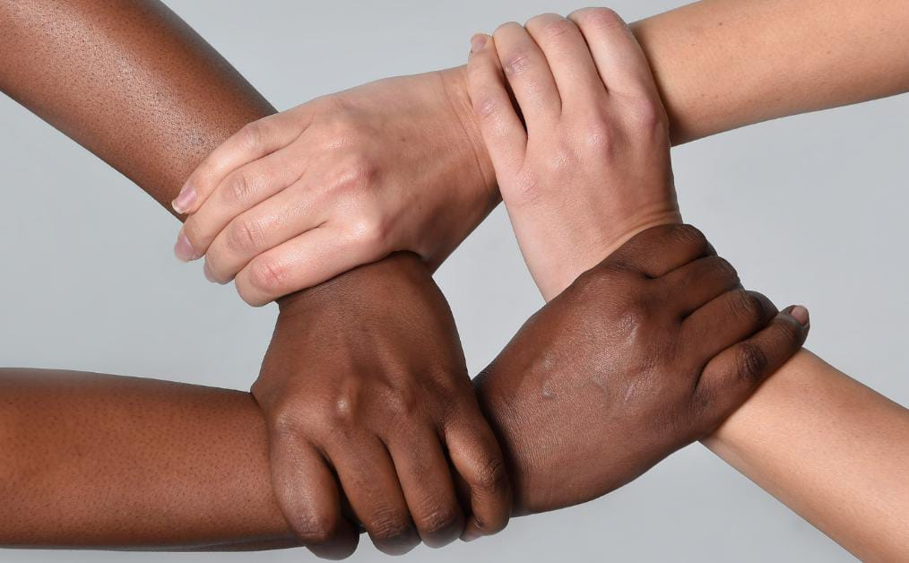
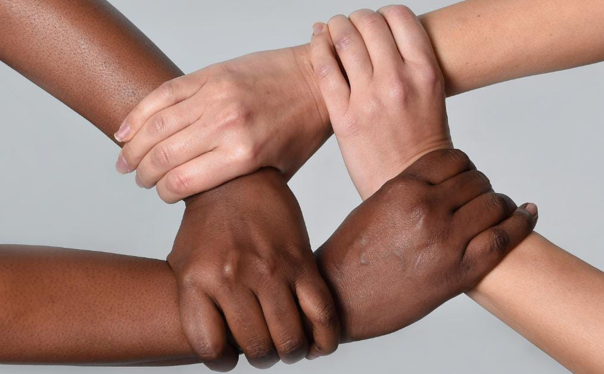

*Desafios à persistência do racismo no esporte brasileiro.*
O documentário “Negro no Futebol Brasileiro”, dirigido por Gustavo Acioli, aborda as dificuldades de jogadores negros para conquistarem o lugar no esporte. Tal realidade contraria a lógica de um país miscigenado e a origem do ídolo mundial Pelé. Vêem-se persistir, desse modo, o legado escravocrata, a desigualdade socioeconômica e a ausência de medidas antirracistas efetivas no âmbito esportivo. Pode-se afirmar que o legado escravocrata agrava a problemática. Durante o período de escravidão, a população negra escravizada era submetida a trabalhos forçados e tratamento desumano. Após a sua abolição, inúmeros estereótipos e preconceitos ainda persistem no corpo social brasileiro contemporâneo, inclusive no âmbito esportivo. Em razão dessa herança histórica, muitos jovens afrodescendentes acabam a perder chances de ingressar em grandes clubes e modalidades esportivas. Além do histórico escravocrata, está a desigualdade socioeconômica que potencializa as práticas racistas em ambientes de competições. Segundo a folha de São Paulo, em 2022, a taxa de salário baixo pertence 26,6% aos atletas brancos e 48,1% aos negros. Esse dado indica que mazelas sociais como o salário desigual e a limitação de recursos, são intensificadas pela cor dos indivíduos, o que dificulta a participação da negritude no esporte devido à descriminação e a falta de uma infraestrutura de qualidade. Aliada ao legado escravocrata e desigualdade socioeconômica, está a falta de medidas antirracistas no âmbito esportivo. À vista disso, o jogador Vinícius Júnior, em 2023, foi alvo de injúria racial em uma partida de futebol, entretanto os torcedores não foram punidos. A frágil punição para tais atos perpetua a violência, transformando o ambiente esportivo de diversidade em um espaço opressivo. Diante dos desafios supracitados, é necessário que o Estado, por meio do Poder Legislativo, realize à implementação de leis mais severas contra o racismo. Ademais, cabe ao (MESP), ampliar as políticas de inclusão social e igualdade de oportunidades em clubes para garantir uma participação de todos sem discriminação. Bem como o Conselho Nacional do Esporte (CNE), fiscalizar e garantir punições efetivas à injúria racial e demais crimes que acontecem durante partidas. Assim, ocorrerá minimização do cenário abordado no documentário “Negro no Futebol Brasileiro”.
Autores da redação:Láisa Beatriz, Murilo Meira, Ytann Fernandes.
 
